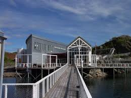
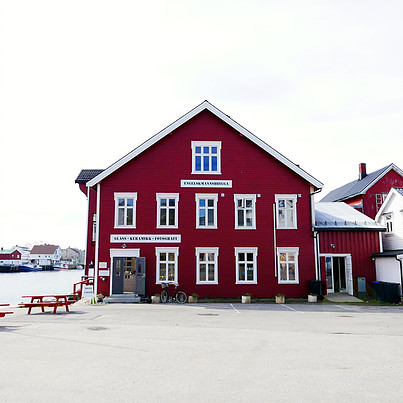

Severdigheter

Det første akvariet i Kabelvåg ble åpnet i 1931 og var i drift frem til 1985 da det ble stengt av sikkerhetsmessige grunner.
Nåværende akvarium med sin særpregede utforming og attraktive beliggenhet, ble åpnet i 1989 og har årlig mer enn 50.000 besøkende.
Ved Lofotakvariet kan du studere vår spennende undersjøiske verden, med fisk og sjødyr fra Lofoten og kysten utenfor Nord-Norge. Her kan du følge livet i havet fra fjærsteinene til det dypeste dyp, samtidig som du får et innblikk i det maritime, økologiske system
Med 23 små og store akvarier har Lofotakvariet et tilbud til alle aldersgrupper.

Engelskmannsbrygga
består av felles felles galleri og verkstedsutsalg for tre kunsthåndverkere og en fotograf. Keramiker Cecilie Haaland, er kunsthåndverker på heltid og har eid og drevet Engelskmannsbrygga siden 1997.
Hun har et bredt repertoar, fra bruksgjenstander til konseptuelle utsmykninger. Glassblåser Mette Paalgard opprinnelig fra Geilo, har drevet glasshytta på Engelskmannsbrygga sammen med Heidi Kristiansen siden mars 2014. Glassblåser Heidi B. Kristiansen opprinnelig fra Larvik, har drevet glasshytta på Engelskmannsbrygga sammen med Mette Paalgard siden mars 2014. Fotograf John Stenersen har eid og drevet Engelskmannsbrygga siden 1997.
Han har et bredt reportoar som fotograf og har gitt ut flere bøker om fugler, hval og natur som er tilsalgs på Engelskmannsbrygga. Han jobber også som lærer på fotolinja på Lofoten Folkehøgskole.

Lofotr Vikingmuseum ble åpnet i 1995. Etter en større utbygging åpnet museet i 2011. Den gamle prestegårdens bygningsmasse omfatter det gamle våningshuset (nå kontorer). forpakterbolig (nå verksted og kontorer) og fjøs/låve (her holder dyra på gården til i vinterhalvåret). Fjøsen ble bygget på 1920tallet, våningshuset i 1930 og forpakterboligen på slutten av 1800-tallet. Ved den gamle prestegården er det en stor hage, med historiske vekster og store, flotte trær. Du er velkommen til å spasere i hagen.